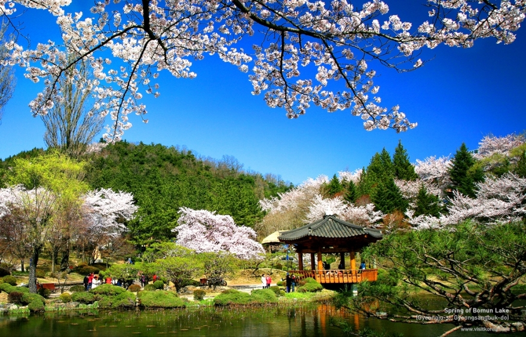

Південна Корея - унікальна країна, де переплітається сучасна високотехнологічна ера з стародавніми будівлями, що ретельно оберігаються державою.
Тут можна побачити і стародавні палаци, і дивовижні природні пам'ятки. Які ж найцікавіші місця у цій невеликій країні потрібно обов'язково побачити туристу?
Корея з її мальовничою природою, горами, пляжами та річками, з багатою культурною та історичною спадщиною, є однією з найцікавіших у туристичному плані країн Південно-Східної Азії.
Тут можна побачити стародавні буддійські монастирі, королівські палаци, скульптурні пам'ятки, пагоди, археологічні пам'ятки, фортеці, фольклорні села та численні музеї.
А мальовнича природа і дбайливо зберігається місце існування надають країні особливу чарівність.
Сеул
Кенбоккун – головний палац країни, який багато хто по праву називає корейським Кремлем. Мандрівники без проблем зможуть знайти його в самому серці Сеула.
Неможливо побувати в туристичному місті та забути зазирнути у це місце. Сам палац був збудований ще в XIV столітті. З ряду причин він постійно змінював свій зовнішній вигляд.
Більшість будівель, з яких складається Кенбоккун, виготовлена з дерева.
Багато екскурсій в Сеулі включають похід до палацу Чхандоккун. Йому одному з небагатьох вдалося зберегти своє первісне обличчя.
Палац постійно доводилося перебудовувати та реставрувати, але під час робіт майстри намагалися зберегти реальний вид споруди.
Завдяки цьому цій визначній пам'ятці Південної Кореї і сьогодні вдається передавати архітектурний стиль, якого дотримувалася династія Чосон.
У стінах палацу аж до смерті жив імператор Сунджон, який запам'ятався історія як останній монарх країни.
У 1955 році архітектурна пам'ятка потрапила до пам'яток Всесвітньої спадщини ЮНЕСКО.
Національний парк Сораксан
Національний парк Сораксан – це затишний куточок природи. Мандрівники, які не вирішили, що відвідати в Південній Кореї,
можуть сміливо вирушати саме сюди, щоб насолодитися неймовірними краєвидами. Парк прославився на весь світ своїми водоспадами та гейзерами.
Не залишилися поза увагою храми буддистів, яким налічується не одне століття. Цікаво те, що для цієї пам'ятки Південної Кореї було виділено територію одразу
у чотирьох сусідніх містах. Місцеві жителі вважають парк головною перевагою країни.
Національний парк вдало поєднує в собі зазубрені вершини, чудові водоспади, глибокі печери та густі ліси.
Гуляючи по Сораксану, туристи можуть натрапити на храм Шинхінгса, який належить до найдавніших буддистських споруд релігійного значення.
Острів Чеджу
Якщо ви ставите питання, що подивитися в Південній Кореї, тоді ви ще не бували на «острові трьох достатків».
Непомітні скарби Чеджу – це каміння вулканічного походження, яке ввібрало в себе історію понад чотириста мільйонів років.
На острові знаходиться кілька згаслих вулканів, найвідоміший з яких називається Халласан.
Інша природна особливість Чеджу – це справжнє буйство стихії, коли найпотужніші пориви вітру вільно розгулюють серед скель.
Також острів прославився самобутньою національною вдачею місцевих жителів. Адже тут головним добувачем є жінка, а чоловік займається домашнім господарством та виховує дітей.
Та й самі по собі остров'яни вже як специфічні пам'ятки Південної Кореї, з їхньою цікавою місцевою говіркою, яку іноді не розуміють навіть корінні корейці.
Крім захоплюючої дух острівної природи, з її водоспадами і гірськими печерами, плантаціями мандаринів, бонсаями та орхідеями, тут можна помилуватися на незвичайні кам'яні
статуї - гігантські триметрові толхарубани, які вважаються хранителями Чеджу. Також обов'язково потрібно відвідати знаменитий Міст семи німф.
Все це обов'язково потрібно побачити на власні очі!
Пусан
Визначні пам'ятки Південної Кореї дуже різноманітні: архітектурні пам'ятники, природні парки, історична спадщина та багато іншого.
Хорошим прикладом є храм Хедон Йонгунса, розташований на околицях міста Пусана.
Буддійський храм Хедон Йонгунса вважається одним із найкрасивіших серед тих, які можна побачити на півдні держави. Але не тільки це надає йому популярності.
Існує стародавнє повір'я, згідно з яким кожна щира молитва або загадане від щирого серця бажання в стінах храму обов'язково збудуться.
Просити можна, що завгодно: здоров'я, фінансове благополуччя, сімейне щастя та багато іншого.
Парк Йондусан знаходиться в Чун-гу, адміністративному районі в південній частині міста Пусан. Назва парку – Йондусан – складається з двох слів:
«йонду», що в перекладі з корейської звучить як «голова дракона», і «сан», що означає «гора».
Але все ж визначною пам'яткою парку вважається Пусанська вежа, висота якої досягає 118 м.
Башта була побудована в 1973 році, всередині немає ніяких передавальних пристрій, як в інших вежах, тому використовується вежа виключно в туристичних цілях.
З вежі відкривається чудовий вид на місто та порт, внизу вежі розташовані галереї та сувенірні магазини.
Пхьончхан
Храм Вольчжонса - один з найвідоміших буддійських монастирів у Південній Кореї. Знаходиться храм у східній частині гір Одесан.
Крім того, в монастирі знаходиться музей Сонбо, де виставлені предмети культури епохи династії Коре.
Гірський парк Одесан знаходиться недалеко від міста Пхенчхан, на північному сході Південної Кореї.
Парк відомий своїми приголомшливими хвойними лісами, які покривають гори. У давнину в горах Одесана було безліч буддійських храмів,
хатин пустельників і монастирів, багато з яких збереглися в парку досі.

Монастир Санвонса - один із численних монастирів, розташованих у горах Одесан, побудований був у 705 році.
На відміну від решти храмів і монастирів, Санвонса постраждав від воєн найменше, а тому зберіг свій історичний вигляд.
Розташований монастир за 8 кілометрів вище дорогою від храму Вольчжонса. З монастирем пов'язано кілька цікавих, а часом кумедних легенд.
Інчхон
Інчхон - одне з найбільших міст країни, третє після Сеула і Пусана за кількістю жителів.
Канхвадо, п'ятий за величиною острів Південної Кореї, разом з навколишніми островами, колись був окремим царством.
Починаючи з правління династії Коре, він відігравав важливу роль у захисті материка.
Залишки фортець, багато меморіальних місць, острів щедрий на історичні реліквії, свідчать про його бурхливу історію.
Після будівництва мосту Канха він став, по суті, частиною материка.